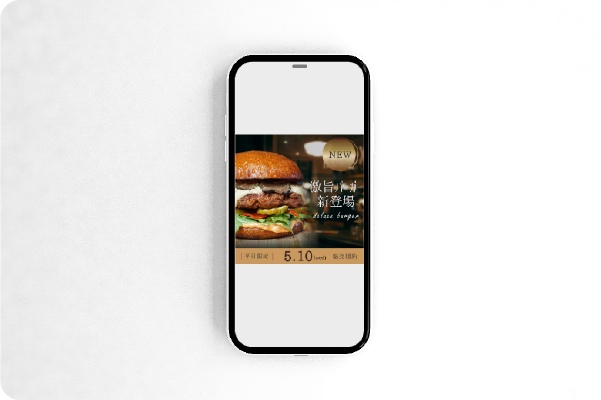

TO.YOU
このサイトを見ているあなたへ。
はじめまして。このサイトは、私から「 あなた 」へ向けた手紙です。
“TO. YOU”には、あなたに向けた、あなたのためだけにある、世界に1つの
ウェブデザインを提案したいという想いを込めています。
あなたは今どんなデザインが欲しいと想像していますか。
私は、あなたの中にあるその“想像”を見えるカタチに“創造”します。
yurika
service
提供できること
-

ディレクション
まず、お客様の要望を丁寧に、ヒアリングしていきます。どういう効果を得たいのか、そのためにどのような要素が必要であるかを、綿密に計画していきます。
-
デザイン
ホームページ、LPやバナーなどのウェブ制作から、名刺、ショップカード、チラシなどの印刷物まで、様々なデザインを承ります。
-
コーディング
どのデバイスで見ても、見やすいようにコーディング（レスポンシブ対応）いたします。 JSを使って動きのあるサイトを作成することも可能です。
works
制作したもの


- 


ALL
about
私について
YURIKA -ゆりか-（1995.10.30）
ウェブデザイナー/グラフィックデザイナー
公務員からデザインの世界へ。
お客様の要望と真摯に向き合い、
共にデザインを創り上げていく姿勢をモットーに。
MORE
skill
できること
contact
手紙を送ってみる